Skip to contentPixel Art Studio · agent-built battle scene · 320 × 180 · 16 px tiles
The Drowned Shrine
A turn-based battle in the style of Sea of Stars (2023), with an original cast and setting. A swordswoman
fights a floating anglerfish spirit in a flooded shrine at night. Krea 2 drew the two character designs and nothing
else. The agent drew all the rest in code, pixel by pixel: the tiles, every animation frame, the effects, the
lighting and the UI. The loop is 336 ticks of 80 ms, about 27 seconds.
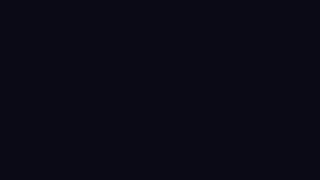
The full loop at 3×. The GIF is 320 × 180 native, scaled up by your browser without smoothing.
The fight, beat by beat
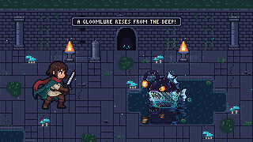
0.0 – 3.6 sIt risesBubbles, a water plume, and the Gloomlure surfaces. The name plates slide in.
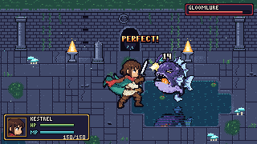
3.7 – 8.0 sAttackMenu, dash, a forehand cut for 14, then a rising cut timed PERFECT! for 21.
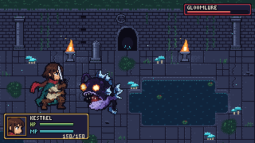
8.0 – 10.5 sAbyssal BiteThe jaw opens wide and the eye blazes. Kestrel's timed BLOCK! keeps the hit to 8.
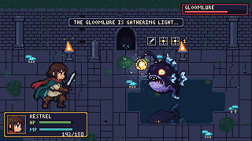
10.6 – 13.8 sThe chargeThe room darkens toward the lure. Three locks appear: sword, sun, sun.
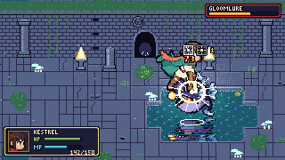
13.8 – 20 sDawn CleaveThe slash breaks the sword lock, then a leaping sun-strike breaks both sun locks: BREAK!, 73.
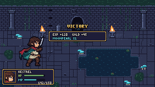
20 – 26.9 sVictoryThe boss dissolves into light motes and the lure sinks. Victory pose, rewards, fade, loop.
The cast
Each fighter goes from Krea's design, to the agent's 64-grid version in the scene palette, to layers
built back to front, to frames drawn one pose at a time.
Humanoid · 96 × 80 canvas · 44 frames · 18 layers
Kestrel
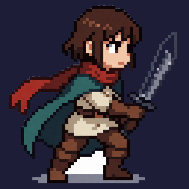
Krea 2 design
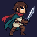
64 grid, scene palette
Every part is Krea's own pixels, including the limbs. Each leg is cut into a thigh, a shin and a cuffed boot, and each piece turns about its real hip, knee and ankle, with knee IK. Boots stay flat on the ground unless a pose tilts them. Her gloved forearms are one piece that turns about its root, and only the sword is redrawn, at wherever her gloves end up. The run is a classic 8-frame stride: contact, down, passing, push-off, heel kick, tuck, knee up, reach. Both legs use the near leg's pieces there, the far one a shade darker. The cloak and scarf tail are bent RotSprite-style, sampling backwards from each output pixel into an 8× copy of the design, so the cloth can't tear.
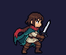
Idle · 6
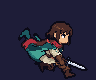
Run · 8
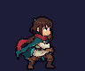
Slash · 5
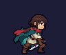
Rising slash · 5
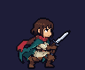
Hop back · 4
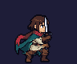
Block · 3
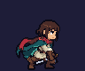
Leap · 4
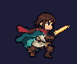
Plunge · 3
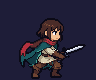
Victory · 6
Her layers (stack = design, 0 px different)
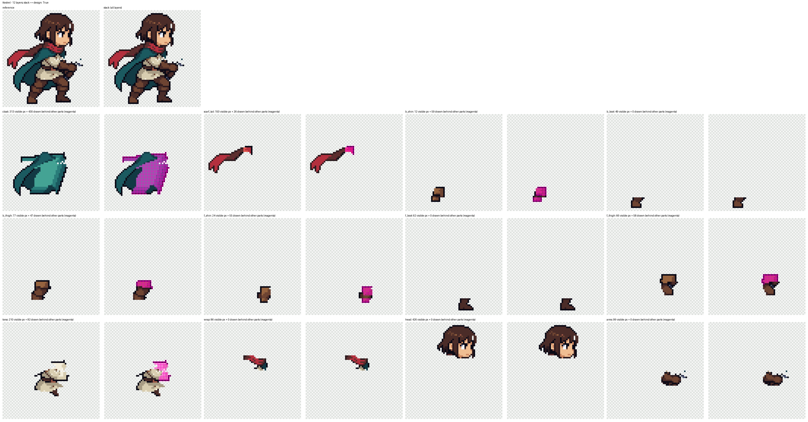
Non-humanoid · 80 × 80 canvas · 21 frames
Gloomlure
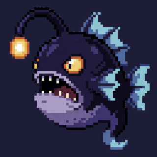
Krea 2 design
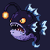
64 grid, scene palette
Nine layers. The jaw hinges at the back of the mouth over a hand-painted throat, the stalk is redrawn as a curve,
and the fins ripple with whole-pixel column and row shifts. Its eye has three hand-drawn states: squint, blaze and stun swirl.
The map with no fighters and no lighting. The pool's edge and corner tiles are picked from each cell's neighbours, and slabs that span two tiles break up the grid.
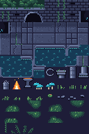
The tileset the map is built from, stored once per tile. The night is not painted into the tiles: every frame steps each colour down its ramp, and the braziers, mushrooms and lure step it back up.
UI and effects
Two bitmap fonts drawn glyph by glyph, framed panels, HP/MP bars with a draining "lost HP" ghost, menu and lock icons, and effects drawn per frame.
Designs. Krea 2 drew the two characters, two seeds each, with a limited palette of about 12 colours. The agent picked one of each.
Into the scene's palette. Krea's image already sits on a 16 px grid. The agent finds the grid, takes each cell's main colour, and maps it to the nearest colour in the scene's 16 colour ramps.
Layers, back to front. Each part keeps the design's visible pixels, and whatever a part hides is painted in by hand. The check: the stacked layers equal the design exactly.
Frames. Every frame is drawn from a pose. Design pieces (a thigh, a shin, a boot, a forearm, a jaw) turn about their real joints with RotSprite, and the knees come from IK. Only what has no fixed shape is redrawn: the sword and the lure stalk. Cloth bends by a twist sampled backwards from each output pixel, so it can never tear. Fins ripple by whole-pixel shifts, and a single ink line goes round the silhouette.
The world. Tiles, UI, fonts and effects are drawn in code in the same palette. The lighting moves colours along their ramps with a dither, so the scene never blends colours.
Choreography. Each tick's image depends only on the tick number, so every frame can be re-rendered on its own and the loop closes exactly.
Into the plugin. Each asset is built into a real .pas by a headless copy of Unity. The plugin then renders every frame back, and the renders are compared with the originals pixel for pixel.
The whole scene is in this repository and rebuilds from the two designs with no GPU: about a minute on a
laptop, with Python 3.10+ and Pillow, NumPy and SciPy (requirements.txt). Run from the repository root;
everything is written to out/scenes/drowned_shrine/ (set SCENES_OUT to change it). The
frames come out identical to the GIF above.
python scenes/drowned_shrine/kestrel.py # her 18 layers; the stack equals the design (0 px)
python scenes/drowned_shrine/kestrel_anim.py # 44 frames, 9 animations
python scenes/drowned_shrine/gloomlure.py # its layers and 21 frames
SCENE=scenes/drowned_shrine python skills/pixel-scene/scripts/render_all.py # the 336-tick loop: scene.gif, scene_x3.gif
The designs came from scenes/drowned_shrine/designs.sh (Krea 2 through
scripts/krea.py, needs ComfyUI); the picked ones and the 64-grid inputs are in scenes/designs/.
The four .pas files above are in scenes/pas/; open them in Pixel Art Studio.
To rebuild them, export_pas.py drives a scratch Unity project with
unity/PasBuilder (see scenes/README.md).